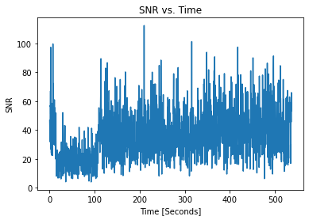
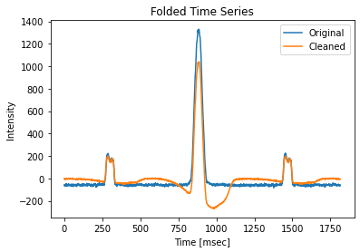

Analyze a Pulsar¶
[1]:
# We'll consider Pulsar J1705-1906
pulse_f0 = 3.344622243443
pulse_dm = 22.907
[2]:
import subprocess
import tempfile
import matplotlib.pyplot as plt
import numpy as np
import requests
from will import detect
[3]:
# Get a 8.1GB filbterbank from zenodo, put it in
# a temp directory
# This is a slow process
temp_dir = tempfile.TemporaryDirectory()
j1705 = temp_dir.name + "/J1705-1906.fil"
r = requests.get("https://zenodo.org/record/6481929/files/J1705-1906.fil")
with open(j1705, "wb") as f:
f.write(r.content)
Search for pulses¶
[4]:
detect.find_first_pulse(
file=j1705,
dm=pulse_dm,
box_car_length=16,
start=0,
gulp=2048,
)
5 Largest SNRs ┏━━━━━━━┳━━━━━━┓ ┃ Index ┃ SNR ┃ ┡━━━━━━━╇━━━━━━┩ │ 1035 │ 11.3 │ │ 1036 │ 11.2 │ │ 1034 │ 11.1 │ │ 1037 │ 10.9 │ │ 1033 │ 10.9 │ └───────┴──────┘
This give us the location of the first pulse, we can then use this to find all the subsequent pulses because we know the period.
[5]:
params = detect.PulseSearchParamters(
file=j1705,
first_pulse=1035,
period=1 / pulse_f0,
dm=pulse_dm,
box_car_length=16,
samples_around_pulse=900,
)
[6]:
pulse_locations = detect.locations_of_pulses(params)
WARNING:root:First pulse (1035) does not give enough padding, increasing by 1167
[7]:
pulses = detect.search_file(pulse_search_params=params, pulse_locations=pulse_locations)
Single pulse properties¶
[8]:
pulses.plot_snrs()
[9]:
pulses.plot_stds()
We see that there is a slight inverse relation between SNR and noise, as expected
[10]:
# Windows with SNR above threashold defined in paramters
print(f"Pulse Window Occupency: {pulses.percent_with_pulses:.2f}%")
Pulse Window Occupency: 91.13%
Folded Properties¶
[11]:
plt.figure(figsize=(7, 7)) # You can make the plot bigger
pulses.plot_folded_dynamic(median_filter_length=1) # median filter removes bandshape
[12]:
pulses.plot_folded_profile()
pulses.folded_properties
Folded Pulse SNR: 97.48
[12]:
PulseInfo(locations=884, snrs=97.48174589384959, std=7.746107941058169)
Effects of RFI Mitigation¶
[13]:
cleaned_file = temp_dir.name + "/J1705-1906_composite.fil"
# put the output to dev null so not to fill screen
subprocess.call(
["jess_composite.py", "-f", j1705, "-o", cleaned_file, "--modes_to_zero", "1"],
stdout=subprocess.DEVNULL,
)
/home/jwkania/programs/miniconda3/envs/kpe/lib/python3.8/site-packages/cupy/fft/_fft.py:152: UserWarning: cuFFT plan cache is disabled on CUDA 11.1 due to a known bug, so performance may be degraded. The bug is fixed on CUDA 11.2+.
cache = get_plan_cache()
[13]:
0
[14]:
params_clean = detect.PulseSearchParamters(
file=cleaned_file,
first_pulse=1035,
period=1 / pulse_f0,
dm=pulse_dm,
box_car_length=16,
samples_around_pulse=900,
)
[15]:
pulses_clean = detect.search_file(
pulse_search_params=params_clean, pulse_locations=pulse_locations
)
Cleaned Single Pulse Properties¶
[16]:
pulses_clean.plot_snrs()

[17]:
pulses_clean.plot_stds()
Now the STD is stabilized except for the first 100 second.
[18]:
print(f"Pulse Window Occupency: {pulses_clean.percent_with_pulses:.2f}%")
Pulse Window Occupency: 99.83%
Cleaned Folded Properties¶
[19]:
plt.figure(figsize=(7, 7))
pulses_clean.plot_folded_dynamic(median_filter_length=1)
[20]:
pulses_clean.plot_folded_profile()
Folded Pulse SNR: 171.71
SNR has gone up a lot but time series is uneven, see https://arxiv.org/pdf/0901.3993.pdf for a discussion of this effect.
Compare Raw and RFI Cleaned¶
[21]:
plt.plot(pulses.folded.mean(1) - pulses.folded.mean(), label="Original")
plt.plot(pulses_clean.folded.mean(1) - pulses_clean.folded.mean(), label="Cleaned")
plt.title("Folded Time Series")
plt.xlabel("Time [msec]")
plt.ylabel("Intensity")
plt.legend()
[21]:
<matplotlib.legend.Legend at 0x7ff9588fd160>

We see the effects of zero DM subtraction, as expected by Eatough 2009
[22]:
plt.title("Cleaned/Raw SNRs")
plt.plot(pulses_clean.snrs / pulses.snrs)
[22]:
[<matplotlib.lines.Line2D at 0x7ff958a24130>]
[23]:
print(f"Min SNR increase: {np.min(pulses_clean.snrs / pulses.snrs):.3f}")
# maybe this was RFI?
Min SNR increase: 0.747
[24]:
print(
f"# Raw Pulses: {(pulses.snrs >= 6).sum()},",
f"# Clean Puleses: {np.sum(pulses_clean.snrs >= 6)},",
f"# Pulse Locations: {len(pulse_locations)}",
)
# Raw Pulses: 1634, # Clean Puleses: 1790, # Pulse Locations: 1793
[25]:
plt.hist(pulses.snrs, bins=45)
plt.title("Raw Pulse SNR Distrabution")
plt.xlabel("SNR")
plt.ylabel("Pulse Counts")
[25]:
Text(0, 0.5, 'Pulse Counts')
[26]:
plt.hist(pulses_clean.snrs, bins=45)
plt.title("Cleaned Pulse SNR Distrabution")
plt.xlabel("SNR")
plt.ylabel("Pulse Counts")
[26]:
Text(0, 0.5, 'Pulse Counts')
Both of these look Log-Normal, as expected by https://arxiv.org/pdf/1807.00143.pdf The cleaned SNRs looks more evenly distributed, which indicated that we are going a better job at sampling the pulse-energy distribution of the pulsar and not the changing RF environment.
[ ]: